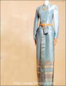

|
ชุดไทยบรมพิมาน

ชุดไทยบรมพิมาน คือ ชุดไทยพิธีตอนค่ำที่ใช้ เข็มขัดใช้ผ้าไหมยกดอกหรือยกทองมีเชิงหรือยกทั้งตัวก็ได้ ตัวเสื้อและซิ่นตัดแบบติดกัน ซิ่นมีจีบข้างหน้าและมีชายพก ใช้เข็มขัดไทยคาดตัวเสื้อแขนยาว คอกลม มีขอบตั้ง ผ่าด้านหลัง หรือด้านหน้าก็ได้ ผ้าจีบยาวจรดข้อเท้า แบบนี้เหมาะสำหรับผู้มีรูปร่าง สูงบาง สำหรับใช้ในงานเต็มยศและครึ่งยศเช่นงานอุทยานสโมสรหรืองาน พระราชทานเลี้ยงอาหารอย่างเป็นทางการในคืนที่มีอากาศเย็นใช้เครื่องประดับสวยงามตามสมควรผู้แต่งประดับเครื่องราชอิสริยาภรณ์
ลักษณะ เสื้อเข้ารูป แขนกระบอก คอตั้งติดคอ ผ่าหลัง อาจจะเย็บติดกับผ้านุ่งก็ได้ หรือแยกเป็นคนละท่อนก็ได้เช่นกัน ส่วนผ้านุ่งใช้ผ้าซิ่นไหมยกดิ้นทอง ตัดแบบหน้านางมีชายพก
การใช้งาน สำหรับแต่งในงานราชพิธี หรือในงานเต็มยศ หรือครึ่งยศ เช่น งานฉลองสมรส พิธีหลั่งน้ำพระพุทธมนต์
|